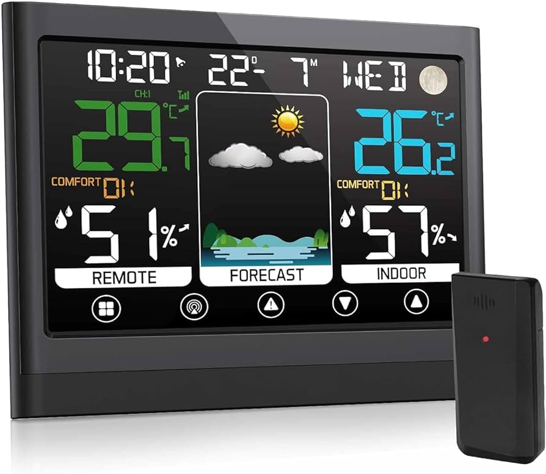
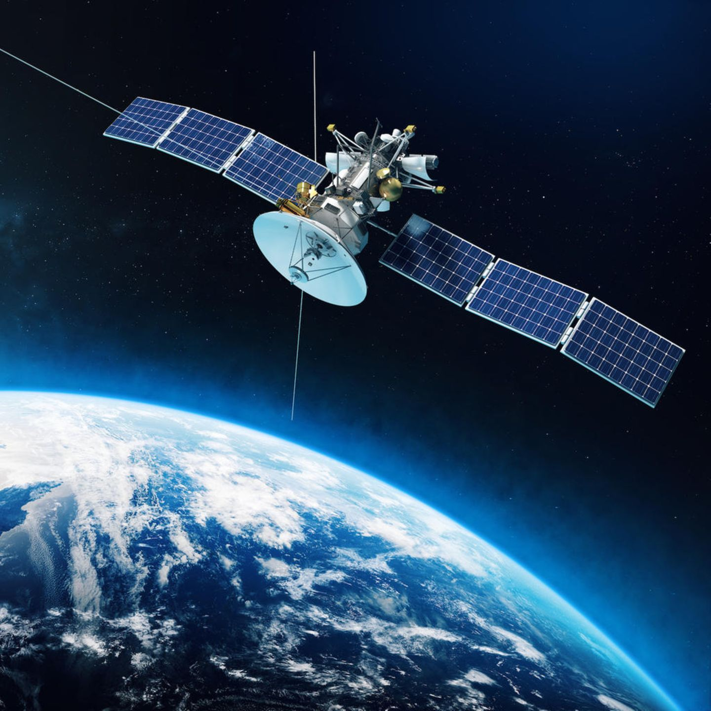
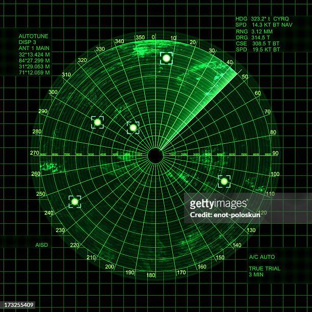

Die Vorhersage des Wetters ist ein komplexer Prozess, der darauf abzielt, das zukünftige Wetter basierend auf aktuellen atmosphärischen Bedingungen und historischen Daten vorherzusagen. Meteorologen verwenden eine Vielzahl von Instrumenten und Techniken, um genaue Vorhersagen zu erstellen.
Wetterstationen, Satelliten, Radar und Wetterballons sind einige der Hauptinstrumente, die verwendet werden, um wichtige meteorologische Daten wie Temperatur, Luftfeuchtigkeit, Luftdruck, Windgeschwindigkeit und Richtung zu messen. Diese Daten werden kontinuierlich gesammelt und analysiert, um ein genaues Bild der aktuellen Wetterlage zu erhalten.
Die Grundlage für viele Wettervorhersagen sind numerische Wettervorhersagemodelle. Diese Modelle verwenden komplexe mathematische Gleichungen, die auf riesigen Supercomputern ausgeführt werden, um das Verhalten der Atmosphäre zu simulieren und zukünftige Wetterbedingungen zu prognostizieren. Zu den bekannten Modellen gehören das European Centre for Medium-Range Weather Forecasts (ECMWF) und das National Weather Service (NWS) in den USA.
Die Genauigkeit von Wettervorhersagen hängt von verschiedenen Faktoren ab, darunter die Verfügbarkeit und Qualität der Echtzeitdaten, die Komplexität der atmosphärischen Phänomene und unvorhersehbare Ereignisse wie plötzliche Wetteränderungen. Trotz dieser Herausforderungen haben sich die Vorhersagemethoden in den letzten Jahrzehnten erheblich verbessert, was zu zunehmend genaueren Vorhersagen führt.
Wer mehr über die Wettervorhersage erfahren möchte, findet auf Websites wie dem Deutschen Wetterdienst (DWD) und wetter.com detaillierte Vorhersagen, Karten und Wetterwarnungen. Diese Seiten bieten regelmäßige Updates und eine Vielzahl von Informationen, die für jeden nützlich sein können, der sich über das Wetter informieren möchte.
Mit Fortschritten in der Technologie, einschließlich der Verbesserung von Satellitenbeobachtungen, der Entwicklung fortschrittlicherer Computermodelle und der Integration von Big Data und Künstlicher Intelligenz, wird die Zukunft der Wettervorhersage noch präziser und zugänglicher sein. Dies könnte dazu beitragen, die Auswirkungen von extremen Wetterereignissen zu minimieren und die Planung in verschiedenen Bereichen wie Landwirtschaft, Luftfahrt und Tourismus zu verbessern.
  